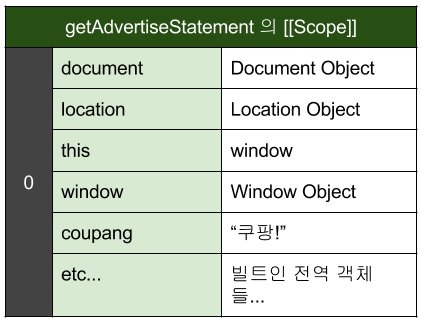
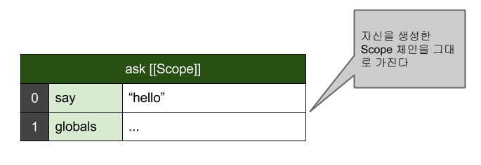
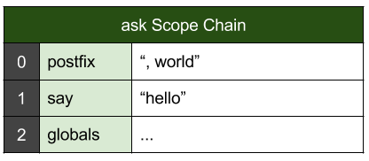

Javascript Scope
Created by 이항희 / blog.javarouka.me
Scope
변수의 유효범위
먼저 Java 언어를 보자...
블럭 단위 스코프.
class Manager {
private boolean isMarried(Programer programer) {
if(programer != null) {
Wife wife = programer.getWife();
}
return wife != null ? "결혼했네!" : "못했구만";
}
}
컴파일조차 안된다...
그럼 JavaScript 는?
var programer = {
name: "원빈",
getWife: function() { return "이나영"; }
};
function isMarried(programer) {
if(programer != null) {
var wife = programer.getWife();
}
return wife != null ? "결혼했네!" : "못했구만";
}
alert(isMarried(programer));무리없이 실행된다.
Function Level Scope 이기 때문.
JavaScript는 블럭 스코프를 지원하지 않는다.
var 변수 선언은 항상 함수 스코프이다
var 를 뺀 선언은 암묵적으로 전역 객체의 프로퍼티로(implict define property) 추가 된다.
EC6에서는 let이라는 블럭 스코프 선언이 추가된다고 한다.(function implictGlobalDefineProperty() {
prop = "implict property";
var vari = "local define variable";
})(); // Named 함수 즉시 실행
// Step 1 글로벌 변수 확인
try { alert(prop); } catch(e) { alert("step1\n" + e.stack); }
// Step 2 글로벌 프로퍼티 확인
try { alert(window.prop); } catch(e) { alert("step2\n" + e.stack); }
// Step 3 삭제 연산 후 확인
delete window.prop;
try { alert(prop); } catch(e) { alert("Step3\n" + e.stack); }
그렇다면?
var a = "global";
function testScope(programer) {
alert(a);
var a = "inner";
alert(a);
}
testScope();뭐지??
실제로는 이런 식이다.
var a = "global";
function testScope(programer) {
var a; // 먼저 선언부터...
alert(a);
a = "inner";
alert(a);
}
testScope();Hoisting
var 키워드를 사용한 변수 선언은 실행 시점에
현재 스코프에 바로 추가된다
값의 할당은 별개로 해당 코드가 실행될 때 이루어진다.
Hoisting을 기억해두고, 좀 더 자세히 살펴보자.
뭐 이런 동작을... 도대체 스코프가 뭐길래
함수의 스코프
[[Scope]]
모든 함수는 프로그래머가 접근할 수 없는 [[Scope]] 라는 속성 (ECMAS-262) 을 가진다.
[[Scope]] 는 key-value 해쉬맵의 배열이다.
실제 함수가 실행될 때 이 배열을 스코프로서 사용한다.
[[Scope]]는 현재 함수가 생성된 환경의 Scope 를 가진다
다음과 같은 코드가 있다.
var coupang = "쿠팡!";
function getAdvertiseStatement(name) {
var template = "{0} 을 {1} 하라"
return template.replace("{0}", name).replace("{1}", coupang);
}함수 getAdvertiseStatement 의 [[Scope]]
// 세상 이라는 문자열을 인자로 해서 함수를 실행한다.
getAdvertiseStatement("세상");- 함수가 실행되면 실행 컨텍스트라는 내부 객체가 생성된다
- 실행 컨텍스트 (execution context) 는 실행 단위을 정의하는 내부 객체이다.
- 실행 컨텍스트는 현재 실행되는 함수의 [[Scope]] 속성으로 스코프 체인을 초기화한다.
- 함수 실행을 위한 스코프 체인이 초기화됐다. 이제 실행하기 위해 로컬 변수 식별을 위한 스텝을 진행한다.
[Link]What is Execution Context?
그것이 활성 객체를 만드는 일이다.
- 함수 내에 선언된 지역변수, 매개변수, arguments, this 등을 가진 key-value 맵을 만든다
- 이것을 활성 객체 (Activation Object) 라고 부른다
- 활성 객체를 앞서 생성된 스코프 체인의 맨 앞 [0] 번째 인덱스에 추가한다.
- 이제 코드를 실행하기 시작한다.
실행 타이밍의 스코프 체인

실행
- template 에 "{0} 을 {1} 하라!" 라는 문자열이 할당된다
- return 구문을 만나고, 왼쪽 실행 결과를 리턴하게 된다
- name 변수를 찾는다.
- 스코프 체인 0번째 변수 객체에 있으니 사용한다
- replace 를 실행한다
- 결과를 가지고 다시 coupang 변수를 찾는다
- 스코프 체인 0번째에 없다
- 그다음 1번째 변수 객체를 뒤진다
- 1번째 변수 객체에서 coupang 을 찾아서 replace 를 성공적으로 수행했다
- 결과를 return.
중첩 함수의 경우
var a = "global";
function A() {
var a = "1";
function B() {
var b = "2";
function C() {
var c = "3";
alert([a,b,c].join());
}
C();
}
B();
}
A();A() -> B() -> C()
실행을 거듭해가며 앞선 컨텍스트의 활성화 객체를 계속 추가하게되어 스코프 체인이 확장된다.
함수 중첩이 깊어지면 스코프 체이닝의 비용이 증가한다.
실행이 종료되면
생성된 실행 컨텍스트와 활성 객체는 파괴된다.
그런데 파괴되지 않는 경우가 있다!
Closure
일반적으로
함수 실행이 끝나면 실행 컨텍스트와 활성화 객체는 파괴된다.
하지만 어떤 이유에서든 내부 함수가 자신을 생성한 환경보다 오래 유지되어야 할 경우가 생긴다.
함수가 함수를 반환, 다른 객체의 인자로 함수 전달, 이벤트 객체로 등록... 등등이럴 경우에는, 함수가 참조하는 스코프 체인의 유실을 방지하기 위해 함수 스코프 체인이 폐쇄 (Closure) 된다.
함수를 반환하는 함수 코드
function hello() {
var say = "hello";
function ask() {
var postfix = ", world";
return say + postfix;
}
return ask;
}
var fn = hello();
alert(fn());fn은 이러한 내용의 함수일 것이다.
function () {
var postfix = ", world";
return say + postfix;
}Hello 가 실행되어 ask 함수가 생성될 때 [[Scope]]
ask 함수는 hello 함수 실행 결과로 자신을 생성해준 함수 밖으로 export 되었다
ask를 생성할 때 만들어진 활성화 객체는 파괴되지 않고 그대로 [[Scope]] 객체에 포함되어 폐쇄되었다.
실제 실행할 때
정리
함수는 자신이 생성될 때 자신만의 [[Scope]] 프로퍼티를 초기화한다.
[[Scope]] 는 자신이 생성된 환경의 스코프를 그대로 복사한다.
실행될 때 자신의 바디 안에 있는 변수 등을 포함하는 활성화 객체를 만들고 변수 객체로 사용한다
보통은 함수 실행 후 파괴되지만 여러 이유로 파괴되지 않고 [[Scope]] 에 유지될 수 있는데 이 것을 Closure 라고 부른다.
전역 스코프는 그렇다면?
var Object = nativeObject(),
Date = nativeObject(),
String = nativeObject(),
window = createGlobal();
// 기타 등등 빌트 인 객체 네이티브 생성
function global() {
// 사용자의 코드가 시작되는 곳
}전역 객체는 인터프리터에 의해 전역 객체를 생성해준 함수의 활성화 객체로 볼 수 있다.
사용자의 모든 함수는 전역 객체를 폐쇄하고 있다고 볼 수 있다.